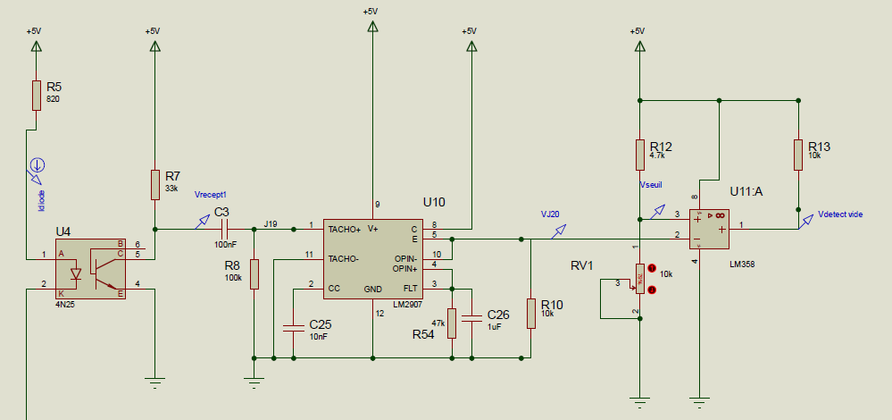

Réalisé en binôme en première année de BUT GEII, ce projet avait pour objectif de concevoir le bloc de détection du vide pour un robot aspirateur. La démarche comprenait une première phase d'expérimentation avec Arduino, suivie de la conception et du câblage d'un circuit électronique analogique plus complexe.
Première Approche : Arduino et Capteur Ultrason
La première étape consistait à prototyper la logique de détection avec une carte Arduino et un capteur à ultrasons. Le but était de valider rapidement le concept en allumant des LEDs en fonction de la distance mesurée, simulant ainsi la détection d'un obstacle ou du vide.
Conception du Circuit Analogique et Défis
La partie principale du projet impliquait le câblage d'un circuit analogique complexe sur plaque d'essai. Nous avons d'abord créé un oscillateur (avec un circuit 4093), puis intégré un optocoupleur (CNY70) pour la détection. Cette étape a nécessité de consulter la datasheet du composant pour adapter le câblage. De nouvelles difficultés sont apparues avec le circuit LM2907 (convertisseur fréquence-tension), dont le fonctionnement imprévisible a nécessité de nombreuses reprises du montage.
Conclusion et Apprentissages
Bien que la détection finale n'ait pas pu être visualisée de manière stable, ce projet a été extrêmement formateur. Il a permis de développer des compétences concrètes en montage pratique, en utilisation de datasheets, et en maîtrise de l'oscilloscope pour l'analyse de signaux.
Compétences Développées sur ce Projet
| Compétence | Détail de la compétence | Niveau d’acquisition |
|---|---|---|
| Maîtrise de l'Oscilloscope | Utilisation avancée pour visualiser et analyser des signaux. | |
| Montage de Circuits Pratiques | Câblage de circuits analogiques complexes sur plaque d'essai. | |
| Analyse de Datasheets | Utilisation de fiches techniques pour adapter un montage. | |
| Programmation Arduino | Prototypage d'une logique de détection avec capteurs. |
Détails du Projet (Code, Schéma & Vidéo)
Voici le schéma simplifié utilisé pour le montage, le code Arduino de la phase de prototypage, et une vidéo du résultat final.
// Définition des broches
#define trigPin 9 // Broche TRIG du capteur ultrason
#define echoPin 10 // Broche ECHO du capteur ultrason
#define RedLed 11 // LED rouge (vide)
#define greenLed 12 // LED verte (obstacle)
void setup() {
Serial.begin(9600);
pinMode(trigPin, OUTPUT);
pinMode(echoPin, INPUT);
pinMode(RedLed, OUTPUT);
pinMode(greenLed, OUTPUT);
}
void loop() {
long duration, distance;
// Envoi d'une impulsion ultrasonique
digitalWrite(trigPin, LOW);
delayMicroseconds(2);
digitalWrite(trigPin, HIGH);
delayMicroseconds(10);
digitalWrite(trigPin, LOW);
// Mesure du temps de retour de l'écho
duration = pulseIn(echoPin, HIGH);
// Calcul de la distance
distance = (duration * 0.034) / 2;
// Allumage des LEDs selon la distance
if (distance < 10 || distance >= 400) { // Obstacle détecté
digitalWrite(RedLed, LOW);
digitalWrite(greenLed, HIGH);
} else { // Pas d'obstacle (vide)
digitalWrite(RedLed, HIGH);
digitalWrite(greenLed, LOW);
}
delay(200);
}